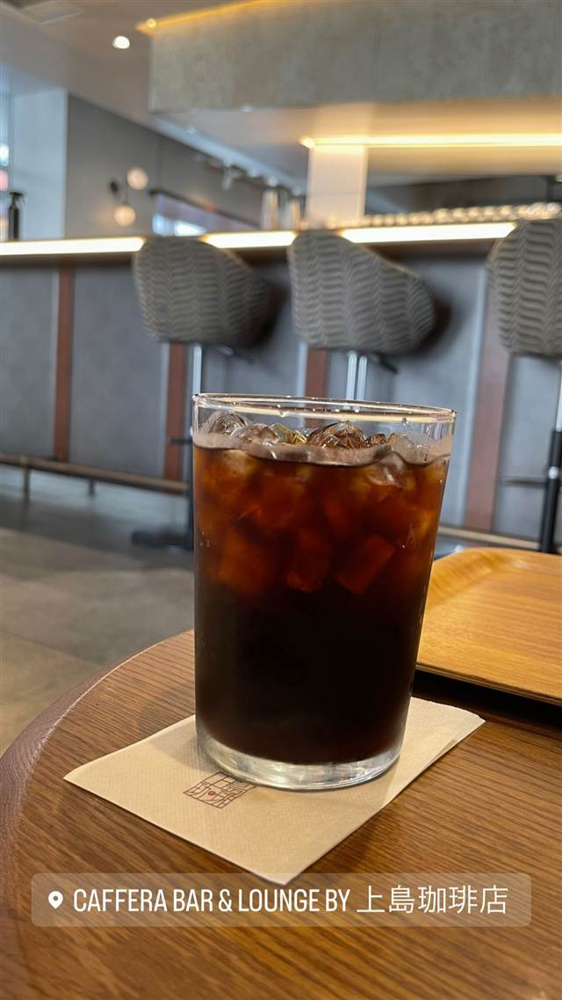

CAFFERA BAR＆LOUNGE by 上島珈琲店
朝はモーニング、夜はお酒も楽しめるホテル内のカフェ
CAFFERA BAR & LOUNGE BY 上島珈琲店
麻布十番のホテル「HOTEL THE LIBELY」2階にある上島珈琲店ブランドのカフェ&バー。朝はモーニング、夜はアルコールも楽しめる構成で、テラス席を備えた落ち着いた空間が特徴。
TRIVIA
へえ、という話
- ホテル「HOTEL THE LIBELY」内に入っており、朝はモーニング、夜はアルコールも楽しめる構成
| 系譜 | UCC系の「上島珈琲店」ブランドが展開する麻布十番の一店舗（HOTEL THE LIBELY内） |
|---|---|
| 看板 | コーヒーからアルコールまで扱うカフェ&バー |
| 場所 | 麻布十番駅 東京都港区麻布十番1-5-23 |
| 注意 | HOTEL THE LIBELY 2階、麻布十番駅から徒歩4分。全席禁煙、テラス席あり。平日・土曜7:30〜20:00、日祝7:30〜18:00。モーニング・ランチ・パーティプランに対応。 |
食べたもの：アイスコーヒー
NEARBY
近い店・同じ系統の店
-
 パスタ 麻布十番
Grill & Pasta es 麻布十番
六本木Ajitoの姉妹店、特製グリルで焼く牡蠣グラタン
昼 ¥1,000～¥1,999 夜 ¥4,000～¥4,999
パスタ 麻布十番
Grill & Pasta es 麻布十番
六本木Ajitoの姉妹店、特製グリルで焼く牡蠣グラタン
昼 ¥1,000～¥1,999 夜 ¥4,000～¥4,999
-
 イタリアン 麻布十番駅
Mancy's Tokyo
トリュフリゾットも楽しめる深夜4時までの複合型イタリアン
昼 ¥6,000～¥7,999 夜 ¥8,000～¥9,999
イタリアン 麻布十番駅
Mancy's Tokyo
トリュフリゾットも楽しめる深夜4時までの複合型イタリアン
昼 ¥6,000～¥7,999 夜 ¥8,000～¥9,999
-
 ピザ 麻布十番
SAVOY クラシック
本格ナポリピッツァの先駆け、1フロア3店3窯で復活
ピザ 麻布十番
SAVOY クラシック
本格ナポリピッツァの先駆け、1フロア3店3窯で復活
-
 ピザ 麻布十番
ピッツェリア ロマーナ ジャニコロ
サバティーニで20年修業した店主が焼くローマ風薄生地ピッツァ
夜 ¥5,000～¥5,999
ピザ 麻布十番
ピッツェリア ロマーナ ジャニコロ
サバティーニで20年修業した店主が焼くローマ風薄生地ピッツァ
夜 ¥5,000～¥5,999
-
 ピザ 麻布十番（7番出口徒歩2分）
Nim's Pizza（旧店名：PIZZA CLUB）
NY仕込みの一枚売りスライスピザ、ソースは全て自家製
昼 ¥1,000～¥1,999 夜 ¥2,000～¥2,999
ピザ 麻布十番（7番出口徒歩2分）
Nim's Pizza（旧店名：PIZZA CLUB）
NY仕込みの一枚売りスライスピザ、ソースは全て自家製
昼 ¥1,000～¥1,999 夜 ¥2,000～¥2,999
-
 イタリアン 六本木一丁目
キャンティ 飯倉片町本店
大葉を使うバジリコパスタ発祥とされる1960年創業の老舗
昼 ¥8,000～¥9,999 夜 ¥20,000～¥29,999
イタリアン 六本木一丁目
キャンティ 飯倉片町本店
大葉を使うバジリコパスタ発祥とされる1960年創業の老舗
昼 ¥8,000～¥9,999 夜 ¥20,000～¥29,999